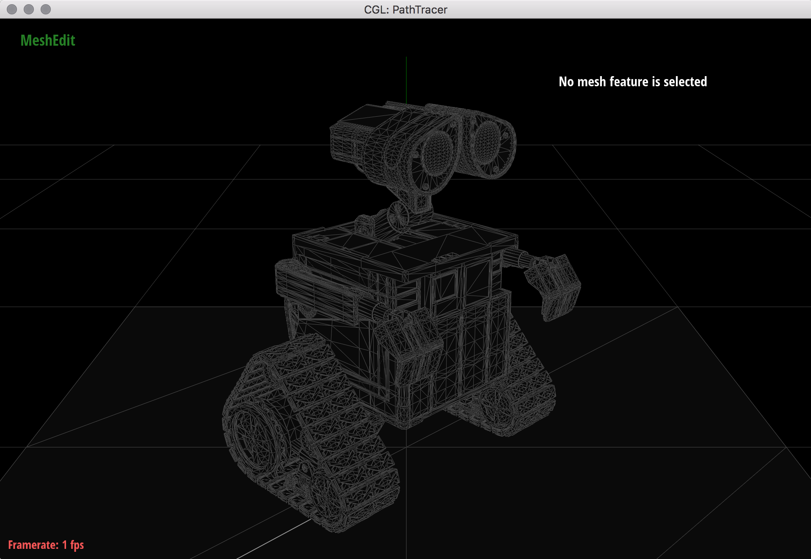
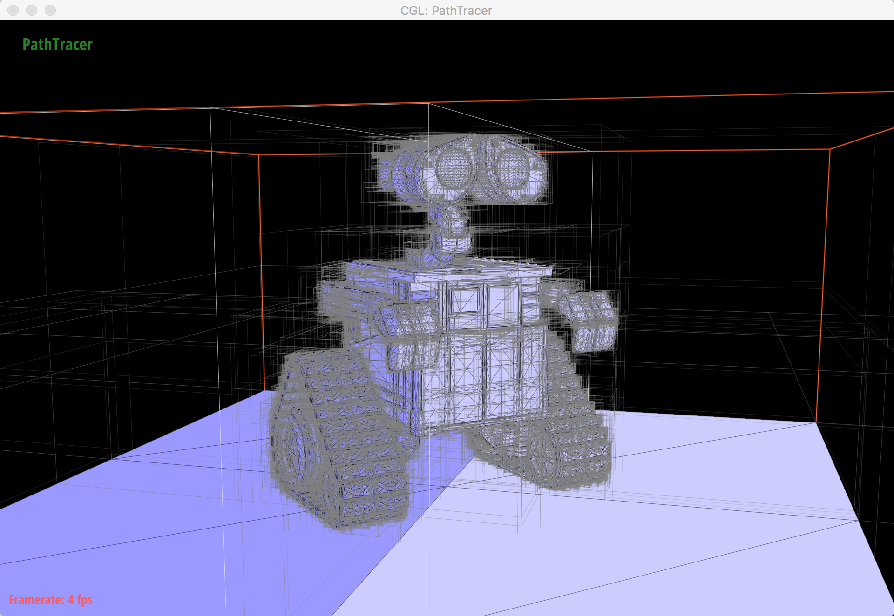
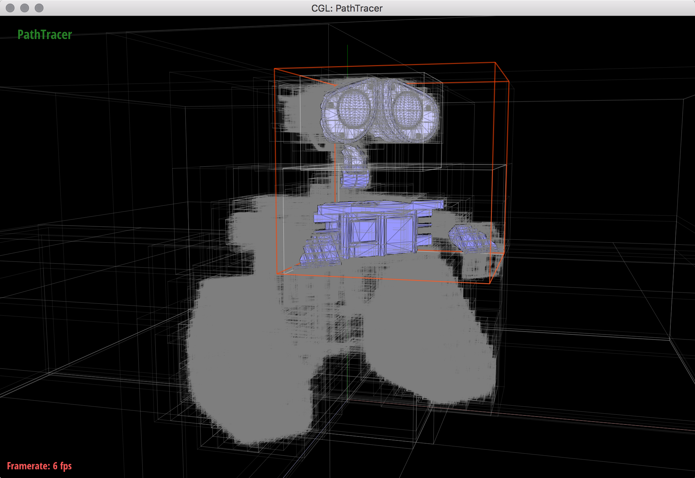
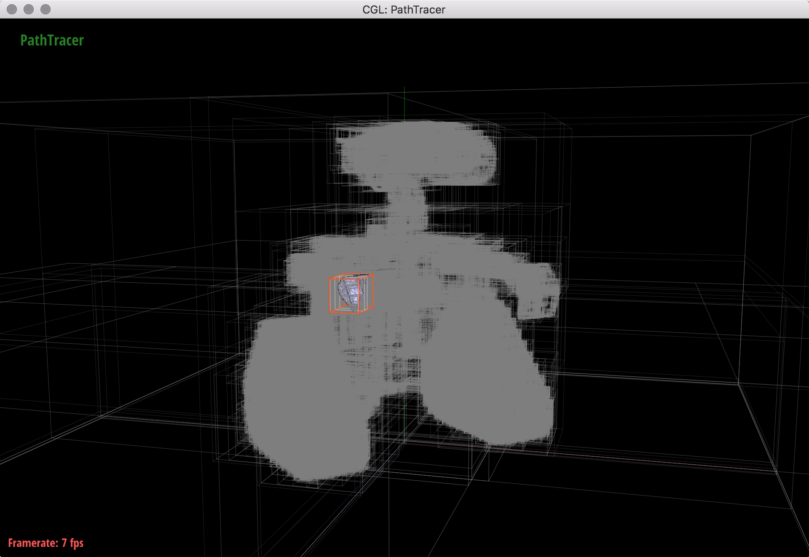
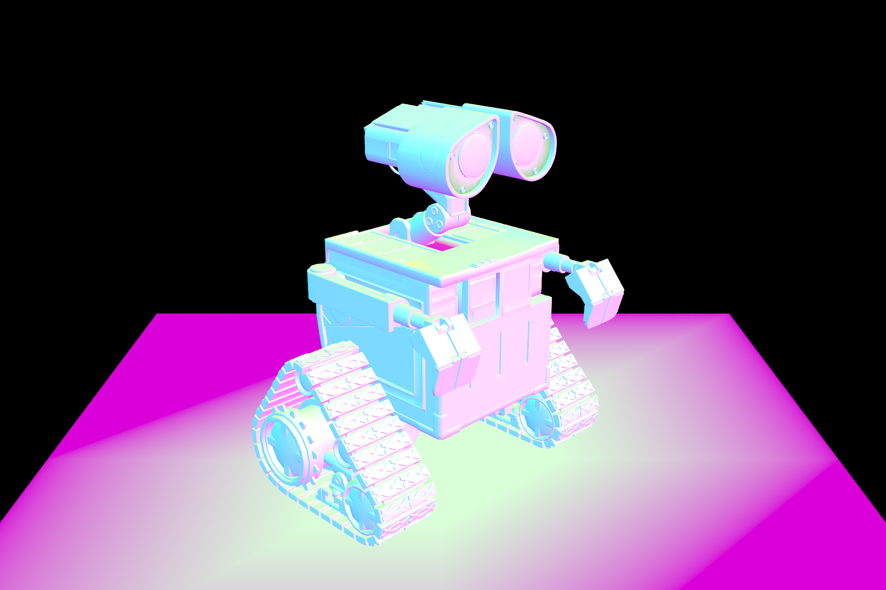
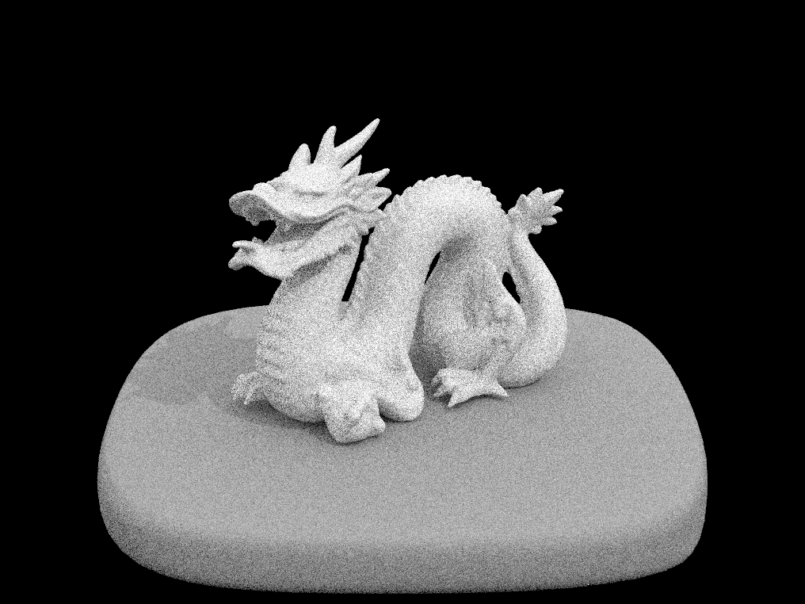
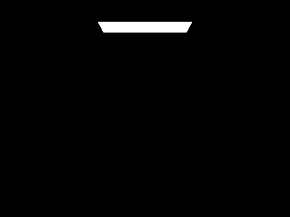
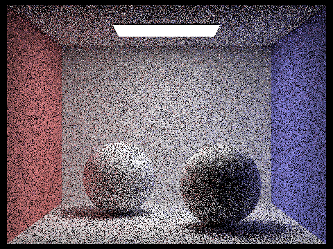
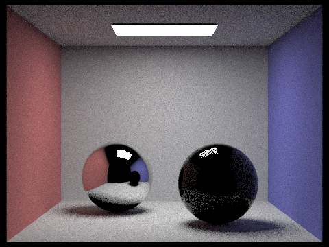
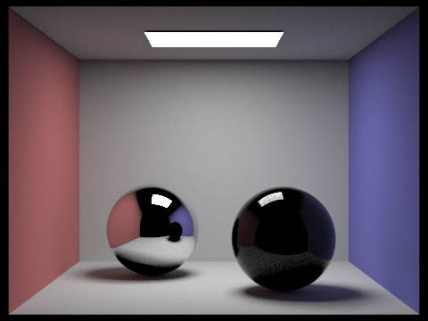

Raytracer
In this project, I wrote a ray tracer! Ray tracing involves tracing the path of light rays to generate images. By tracing the path of many many rays, I can determine how objects in a scene interact with eachother. For example, I can trace a bunch of rays from a light source, to an object, to the camera, determine how the object appears in the scene, and render or "draw" it to the screen accordingly.
Part 1: Ray Generation and Scene Intersection
The first thing I did was implement a raytrace_pixel() method. The method integrates the irradiance of the pixel.
Irradiance:
The flux of radiant energy per unit area (normal to the direction of flow of radiant energy through a medium)
In other words, I implemented raytrace_pixel() to find the amount of light energy in the given pixel, which tells me how bright the pixel should be. I did this by generating a given number of "rays" through the pixel.
Ray:
A line with a start point, but no end point.
In my program, a ray is given an origin (it's start point), a vector which dictates it's direction, a depth, and a "min_t" and "max_t". The "min_t" and "max_t" allow me to treat the ray as a segment, if I wish. So I can cut it off at the minimum time and maximum time I set. This becomes important later!
In this case, all of the rays I generate have the "camera"'s position as their origin and a vector towards the pixel as their direction. You can think of the camera as where your eye is in the scene. So basically I am drawing a bunch of lines from my eyeball to a point in space and summing up all of the radiant energy, or irradiance, that my eyeball is detecting at that point in space.
Primitive Intersections
Primitive:
These are the building blocks of the scenes. Triangles are used most commonly, but all kinds of shapes can be used!
Next, I used the Moller Trumbore algorithm to implement a method, Triangle::intersect(), that lets me know if a given Ray intersects that particular triangle. The Moller Trumbore algorithm gives a way to move the origin of the ray and change the base of it to get a vector: [t, u, v] where t represents the distance from the ray's original origin to the plane the triangle is on, and u and v are the Barycentric coordinates within the triangle that the ray intersects. (See part 5 of my rasterizester project for more on Barycentric coordinates)
Since most of the scenes I will be rendering are made up of triangles, it is super important to be able to tell whether the Rays I trace are intersecting them. If I trace a ray from a light's position out in some direction and it intersects a triangle, T1, I can tell exactly which point on that triangle T1 is lit up by that particular ray... almost. What if there is another, larger triangle T2 in between the light and T1?? Then the point I found on T1 wouldn't be lit up at all, since it would be obstructed by T2.
Here is where "min_t" and "max_t" come in. When I trace a ray from a light and use the Moller Trumbore algorithm to test whether it is intersecting the primitives triangles, T1 and T2, in my scene, I will find out it intersects both of them and the "t's" (distances) the triangles were from the origin of the ray. However, I am only interested in the closest intersection since that is the one which is lit! So, once the ray intersects T2, I set the ray's "max_t" to the distance T2 is from the origin of the ray. That way, when I test T1, I will be able to tell it isn't the closest intersection, since it's t value will be greater than the ray's "max_t".
I implemented a similar method for intersecting spheres, and then I was able to render my first images!
Part 2: Bounding Volume Hierarchy (BVH)
So, remember that all of the scenes I am rendering are made up of a bunch of "primitives", usually triangles. As you can imagine, really complicated scenes require A LOT of triangles. We could be talking on the scale of hundreds of thousands of triangles, or even more.
With that in mind, it isn't efficient to loop through every single triangle of the mesh for every ray I need to trace. I am tracing potentially thousands of rays per primative per scene. For simple meshes like those in part one, that will suffice, but for more complicated meshes like Wall-E I need a better solution. This is where bounding volume heirarchys come in.
By subdividing my mesh into bounding volumes, I can first test if a ray intersects a large bounding volume containg part of the mesh. If it doesn't, I just saved a bunch of time. Before, I would have had to test all of the primitives in that volume! If it does, I can descend into the smallest bounding volume the ray intersects, and test only the primitives in that box.
Constructing the BVH
To construct the BVH, I find a bounding box that contains all of the primitives in the scene. Then, I create an empty BVH node. If the amount of primitives in the box are under a specified max_leaf_size, then I am done. Otherwise, I need to divide that bounding box into smaller ones.
To accomplish this, I split the current bounding box in half. It is a 3D bounding volume, so I split it along it's longest dimension. Then, I put each of the primitives into either the left or right box. If their centroid in the chosen axis is less than the split point, they go in the left box, and vice versa. This continues recursively until all of the primitives are contained in boxes with <= max_leaf_size total primitives.
 Now if I am testing a ray which intersects a primitive Wall-E's hand, I save myself a bunch of work, since I don't have to loop through any of the primitives outside of the little bounding volume that contains his hand. Again, this is super important, because sometimes I am tracing thousands of rays per pixel!
Intersecting a Bounding Volume
To find intersections in my bounding volume, I start with the ray and the root node of my bvh tree (the giant box that holds all of the primitives).
This continues until I reach a bounding volume the ray doesn't intersect, or until I reach the leaf node and test the primitives inside.
Part 3: Direct Illumination
Up until this part, I was only tracing camera rays. The lighting in the scenes was just based on the normal vectors from the primitive to the camera. Now I will start tracing rays from lights to the scene to determine the radiance of each pixel!
To determine the direct lighting of the scene, I sum over all of the light sources in the scene. From each light, I take sample rays and compute the incoming radiance from those directions. Then I convert the incoming radiance to outgoing radiance using the Bidirectional Scattering Distribution Function (BSDF) of the surface.
The image is very noisy!
Notice the shadows on the dragon's neck and tail are much more distinct!
Part 4: Indirect Illumination
Now, instead of just considering light rays directly from the light to the surface, I let the rays "bounce". This lets me detect radiance that is coming not only directly from the light, but from light bouncing off the other objects!
Notice the colors visible in the shadows!
To accomplish this, first I take a sample from the surface BSDF at the point where the ray hits. Using the illumination from that sample, I determine whether to stop there or let the ray bounce again. I can't just let the rays bounce forever (too expensive!), but fortunately I can achieve a pretty realistic result using "Russian Roulette" to decide how whether or not to terminate the ray. I flip a biased coin with probability proportional to illumination of returning true. If the illumination is already very low, I am more likely to terminate the ray. If it is very high, I am more likely to let it keep bouncing. This way even though I am sampling "randomly", I am making sure the brightest rays are being represented.
If the coinflip returns true, I recursively trace the ray again, offsetting it's origin slightly and sending it off in the direction of the incoming radiance converted to world coordinates. The light from the ray is accumulated in the scene until the russian roulette terminates it.
Global Illumination at varying Sample Rates
As you can see, it takes a lot of samples per pixel to completely eliminate the noise in the image! Images with only one sample per pixel take seconds to render, while images with 1024 samples take hours!
Varying Camera Ray Depths
This is skipping ahead a little, but once I add the glass and metallic materials, you can clearly see the effects of increasing the max ray depth.
Rays enter the glass sphere but they never leave!
Now the rays bounce inside the glass!
You can tell they are still trapped inside because the mirror ball still shows a dark glass sphere.
Finally the rays are making it outside of the glass.
Now the rays are showing up on the right wall too!
Part 5: Materials
Remember the Bidirectional Scattering Distribution Functions I mentioned earlier? They take convert the incoming radiance of a ray to outgoing radiance. Different materials have different BSDFs, since light reacts differently to them. I implemented glass and mirror BSDFs to generate the image you see above.
Mirror and Glass BSDF
The mirror ball (left) requires a mirror BSDF. This was relatively simple to implement, since the ray just reflects off of the mirror. The glass ball (right) is much more complicated. Sometimes light reflects off glass, and sometimes it refracts inside! To simulate this, I used another biased coin flip based off of the Schlick's Approximation. If the coin returned true, I reflected the incoming radiance as I did with the mirror BSDF, except with the Schlick coefficient as the probability density function (for mirror the probability density function was 1). Otherwise, I refracted the incoming radiance.
Rays enter the glass sphere but they never leave!
Now the rays bounce inside the glass!
You can tell they are still trapped inside because the mirror ball still shows a dark glass sphere.
Finally the rays are making it outside of the glass.
Now the rays are showing up on the right wall, and bouncing back onto the glass!
Increasing Samples per Pixel